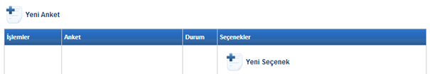
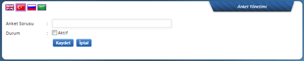
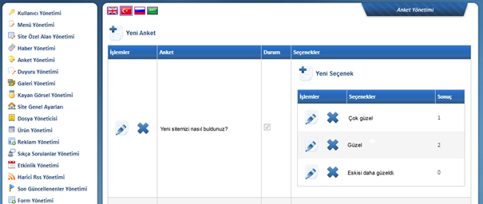
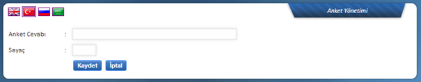

Yeni Anket butonu ile sorulacak soruyu girebileceðiniz ek pencere açýlacaktýr.

Soruyu girdikten sonra Durum alaný iþaretlenerek aktif hale getirilebilir. Yine ayný þekilde var olan sorularda da Durum alaný iþaretlenerek ya da iþaret kaldýrýlarak yayýnda kalmasý/kaldýrýlmasý saðlanabilir.

Yukarýda görüldüðü üzere Yeni Ekle alanýndan “Yeni sitemizi nasýl buldunuz?” sorusu eklenmiþ. Bu soru eklendiktan sonra ona ait bölümün sað tarafýnda göreceðiniz üzere cevap þýklarý yer almakta. Buradaki Yeni Seçenek özelliði baðlý olduðu sorunun altýna cevap þýkký eklemek için kullanýlmaktadýr. Cevaplar için seçenek adet sýnýrý bulunmamakla birlikte, çok fazla seçenek verilmemesi önerilmektedir. Admin, anket bilgilerinin içeriklerine buradan da ulaþabilmektedir. Kullanýcýlar tarafýndan cevaplanan sorularýn cevap kayýtlarý yandaki rakamlarda görüntülenecektir.
